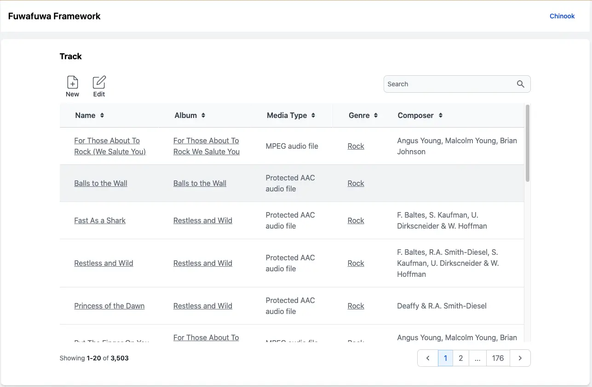
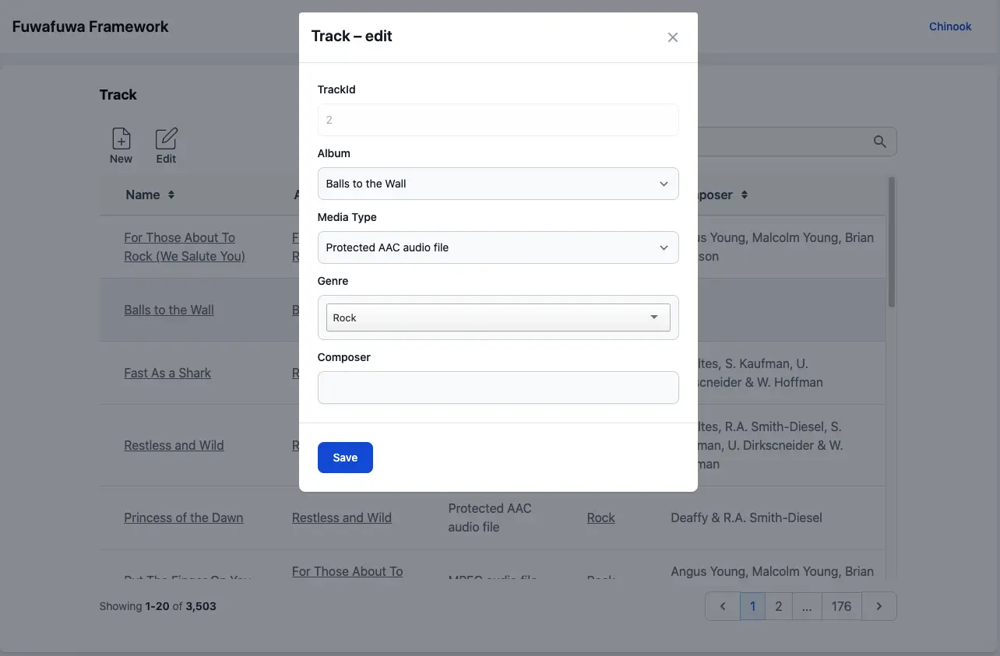

Views
Views are HTML files that generate the user interface of your application. They can include dynamic content retrieved from models and controllers.
View format
Fuwafuwa Framework utilizes the Fat-Free Framework (FFF) templating engine. This allows you to:
- Include other views: Break down your UI into reusable components by using the include tag to embed smaller views within larger ones.
- Perform simple loop control: Use loops to iterate over data arrays and generate dynamic content.
- Execute PHP code: Include short snippets of PHP code directly within your views for specific logic or calculations. However, it's generally recommended to keep complex logic within controllers to maintain separation of concerns.
Here's a recommendation: While views can include PHP code, prioritize placing most logic within your controllers and passing processed data to views using the F3 hive (explained later). This promotes better separation of concerns and makes your views cleaner and easier to maintain.
Example of a Root Template:
The provided example (views/theme/fuwafuwa/templates/template.html) demonstrates the
structure of a main layout template. It includes placeholders for fragments like meta, style,
content, and scripts. These fragments are typically defined in separate files and injected into the
layout using tags like f3:fragment and f3:inject.
<!doctype html>
<html>
<head>
<f3:fragment id="meta" tag="FALSE" />
<f3:fragment id="style" tag="FALSE" />
</head>
<body class="bg-gray-100 dark:bg-gray-800 dark:text-gray-100">
<div id="container" class="overflow-x-hidden ">
<!-- NAV START -->
<!-- NAV END -->
<!-- BODY START -->
<f3:fragment id="content" tag="FALSE" />
<check if="{{ isset(@content_html) }}">{{@content_html | raw }}</check>
<include href="blocks/footer.html" />
<!-- BODY END -->
</div>
<f3:fragment id="script" tag="FALSE" />
<include href="{{@content}}" if="{{@content}}" />
<include href="blocks/core-js.html" />
<include href="blocks/core-css.html" />
<include href="blocks/core-meta.html" />
</body>
Example of Fragment Injection:
The code snippet (views/theme/fuwafuwa/blocks/core-css.html) showcases how to inject
content from a separate file (core-css.html) into the style fragment of the layout. The
f3:inject tag allows you to specify the target fragment (id="style") and
the injection mode (mode="prepend" in this case). This way, you can manage CSS styles
from different files and ensure proper loading order.
<f3:inject id="style" mode="prepend">
<link rel="apple-touch-icon" href="{{@BASE}}/apple-icon-120.png">
<link rel="shortcut icon" type="image/x-icon" href="{{@BASE}}/favicon.ico">
<link rel="stylesheet" type="text/css" href="{{@BASE}}/css/styles.opt.min.css">
<style>
[x-cloak] {
display: none;
}
</style>
</f3:inject>Key Points:
You can include multiple files for the same fragment, specifying their placement using mode (e.g., append, prepend, or overwrite). By default, the injection mode is overwrite, so be mindful of potential conflicts if you don't specify a mode. This templating system empowers you to create modular UI components with dedicated CSS and JavaScript files, promoting code reusability and maintainability.
This feature is enabled by f3-template-section library
Passing variables to View
In Fuwafuwa Framework, we pass variables from models/controllers to view via F3 hive singleton. In php, we instantiate the variable using expression
$f3 = \Base::instance() $variable_name = $f3['variable_name'];and in html files we use
{{ @variable_name }}
The template engine has very convenience syntax to access array, for example if we pass
['limit' => ['top' => 5, 'bottom' => 10]] to position variable in F3 hive, we
can
access it like this:
$f3['position.limit.top']
{{ @position.limit.top }}
Themes
Fuwafuwa Framework comes with a default theme built on Tailwind CSS, Flowbite, and Alpine JS. This theme provides more than just styles; it also includes pre-built UI components for rapid application development.
Theme Location:
Theme files reside in the /themes directory. The theme used by the application is
typically specified in the APP section of your configuration file
(app/configs/config.ini).
Custom Themes:
You can create your own theme by replicating the structure of the default theme. This allows you to leverage Fuwafuwa's component system while customizing the look and feel using your preferred CSS framework (e.g., Bootstrap, Foundation, Semantic UI).
Theme Highlights:
One of the standout features of Fuwafuwa themes is the built-in component for displaying and managing table data. This component offers functionalities like:
- Paging: Navigate through large datasets efficiently.
- Sorting: Order data based on different columns.
- Searching: Filter data according to user input.
- Editable forms: Allow users to modify table entries directly.
These features can significantly accelerate the development of data-driven web applications.  